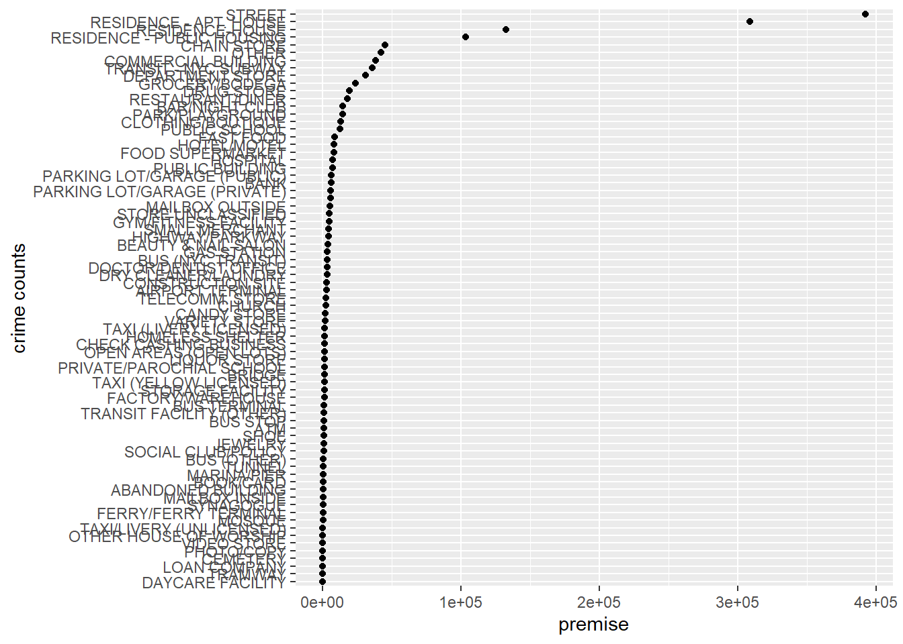
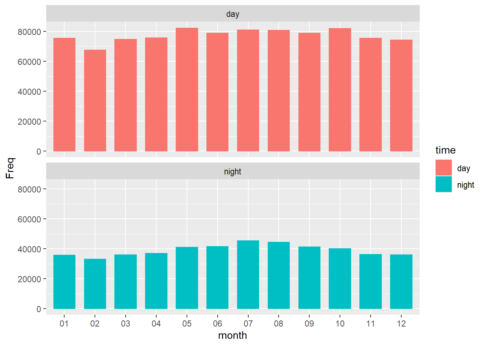

Chapter 4 Results
Here, we analyze each variable one by one to see how the crime rate changes under different categories.
4.1 Variables
4.1.1 RPT_DT
Variable “RPT_DT” is the date that the event was reported to police.
From the Time Series plot, we found that the year-to-year crime trends were similar, with lower numbers at the beginning and end of the year and higher numbers in the middle of the year.

Therefore, we break down the number of crimes by month. Crimes are higher from May to October and highest in July, lowest in February.

4.1.2 OFNS_DESC
Variable “OFNS_DESC” is the crime description of corresponding to the offense event.
As we can see from the Cleveland dot plot below, in the New York area, the most committed crime was “Petit Larceny”. Appeared more than 200,000 times from 2017 to 2019. Besides, the crimes of harrassment also exceed 200,000 times and crimes of assault & related offenses, criminal mischief, grand larceny exceed 100,000 times. These were the types of crimes that occurred the most during the three-year period. They are sudden crimes and mainly threaten personal financial security.

4.1.3 LAW_CAT_CD, BORO_NM
Variable “LAW_CAT_CD” is the level of offense, it contains felony, misdemeanor and violation. Variable “BORO_NM” is the name of the borough in which the incident occurred.
As we can see from the Horizontal Stacked Bar chart, Brooklyn has the most crimes and Staten Island has the least. This may be caused by the population gap, but still reminds us of the security situation in different regions. At the same time, from the perspective of crime level, most crimes are misdemeanors, and the number of serious crimes is second. But in terms of seriousness, felony causes greater personal harm and social impact, so we need to pay more attention to its data. In terms of numbers, the Brooklyn area had the highest number of felony crimes. But in terms of proportion, the proportion of felony crimes in each region is near 20%.

4.1.4 PREM_TYP_DESC
Variable “PREM_TYP_DESC” is specific description of where the crime occurred, e.g. grocery store, home, street, etc.
The most crimes occurred on the street, followed by residential apartment house, with more than 300,000 crimes during three years.

4.1.5 Age_group
This part contains two variables “SUSP_AGE_GROUP” and “VIC_AGE_GROUP”. These records the ages of suspects and victims of offense, helping us better understand the characteristics of suspects and helping us identify potential threats.
Ignoring the group of unknown, we see that both suspects and victims are concentrated between 25-44 years old. Both suspects and victims gradually decrease as age decreases before 25 years old or increases after 44 years old.

4.1.6 Race
This part also contains two variables “SUSP_RACE” and “VIC_RACE”. These records the race of suspects and victims of offense.
Sorted by suspect’s race, ignoring UNKNOWN group, We found that the race with the more suspects, the more victims. Blacks have the most suspects and victims, which reminds us that the living environment of blacks in New York may be worse than other races.

4.2 Relationships
4.2.1 SUSP_SEX & law_cat_cd
This mosaic plot showed us the relationship between suspect’s sex and the level of offenses. Among all crimes, male suspects accounted for the highest proportion. Female suspects take a relatively large proportion of the level of violation, and the proportion of female suspects gradually decreasing as the severity of the offenses increases.
